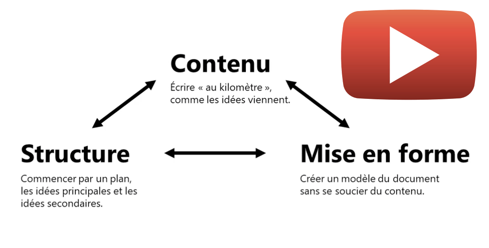
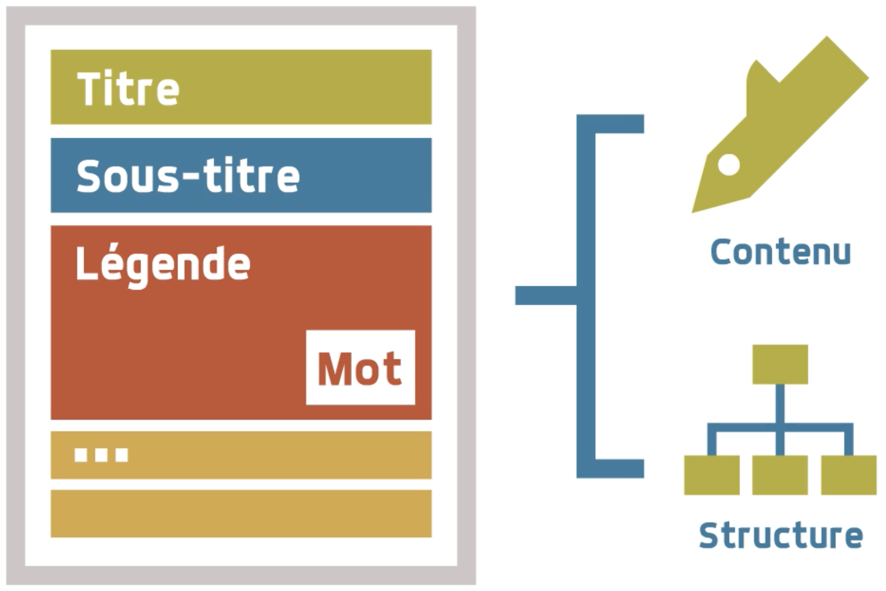
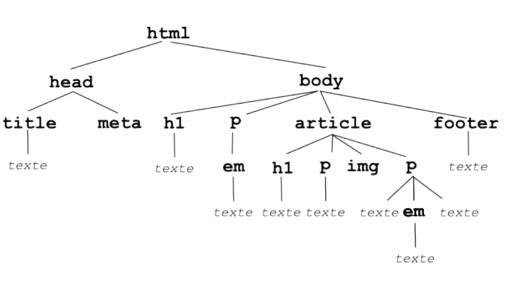
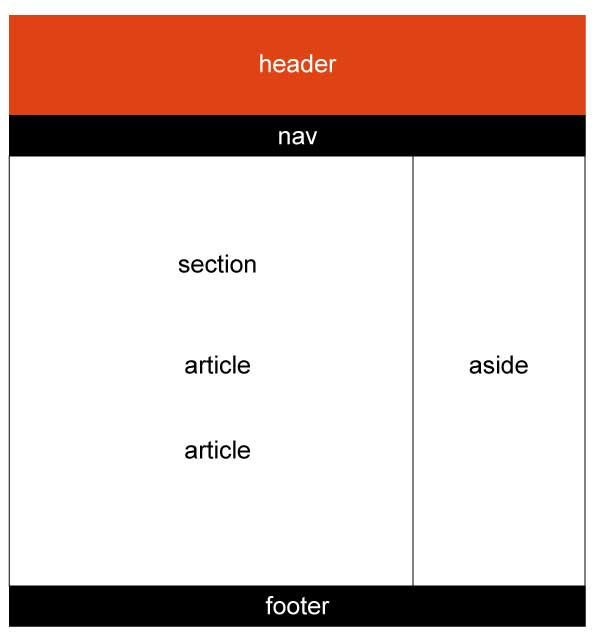

HTML
- introduction au html/css: activité version guidée ou version autonome
- page du site vers le HTML
- page du site vers le CSS
- page du site vers le CSS display et position
Les langages web
Une conception similaire à l’edition d’un document Word
On utilise des logiciels d’edition, comme Word, Writer, ou Page, pour créer des documents qui seront le plus souvent imprimés (ou mis dans un format pdf).
L’edition va consister à placer du contenu, le structurer, le mettre en forme. Et pour réaliser ceci, la bonne pratique, c’est justement de séparer ces 3 moments, tout en utilisant le même logiciel.

video - youtube
Avec les langages web, HTML et CSS, on edite le document pour le web avec cette même pratique: en séparant les moments (et donc le code) prévus pour ajouter la structure, et ceux prévus pour gérer le style du document.
Des langages interprétés: rôle du navigateur
HTML : HyperTextMarkup Langage; CSS : Cascading StyleSheets; Javascript sont des langages interprétés par le navigateur, côté client. Ces 3 langages, en combinaison, vont permettre de créer des sites internet.
Pour que les pages soient accessibles à tout le monde, sur le web[^2], ces pages doivent être hébergés sur un serveur. Lorsque le navigateur client envoie une requête au serveur, celui-ci lui renvoie les fichiers HTML, CSS et JS. Les instructions sont alors interprétées par le navigateur et permettent l’affichage des pages.
Ces langages sont en constante évolution. Ce sont des langages open sources[^5] et de nombreux contributeurs en proposent des améliorations.
Il existe plusieurs logiciels navigateurs (Mozilla, Chrome, Safari,…). Et pourtant, malgré cette diversité et ces évolutions du langage, ceux-ci vont interpréter ces fichiers et afficher les pages (presque) de la même manière car ils se réferent tous aux mêmes recommandations, celles du w3c[^4].
Une petite différence peut exister pour le rendu d’une même page, mais avec plusieurs navigateurs différents. Cela est du aux propriétés par défaut utilisées par le navigateur pour l’affichage des différents éléments html de la page. Ces propriétés peuvent être déclarées (CSS) afin d’avoir un rendu toujours identique.
Rappels de SNT sur le Web
des tâches différentes
Les langages web se partagent les tâches : Une bonne pratique dans le développement d’un site internet (côté front-end, ce qui est executé sur la machine du client) consiste à utiliser:
- HTML pour le contenu , et la structure (avec un contenu correctement balisé, sémantique, accessible)
- CSS pour la mise en forme et le design de la page, les propriétés relatives à chaque élément de Style (balise html).
- et JavaScript pour gérer les interactions (qui peuvent éventuellement amener à modifier le contenu via les méthodes du DOM[^1]).
C’est un langage de description qui gère le contenu (le texte et les images), en ajoutant des éléments de structure, comme par exemple:
- mettre le texte dans un paragraphe
- mettre du texte en relief
- insérer un hyperlien sur le texte
- mettre un titre à la page, au paragraphe
- …

Lire la video depuis 20' => 1min40'
Le langage HTML est un langage constitué de balises, comme par exemple :
<title>le titre de ma page</title> qui permet d’afficher le titre de la page dans l’onglet du navigateur.
Les éléments mis dans le programme à l’aide de ces balises vont permettre d’ajouter et structurer le contenu de la page : des titres de différents niveaux, du texte, des images, des médias (sons, videos),mais surtout, des hyperliens :
- entre les pages du sites
- vers les pages de sites externes
Le web est justement basé sur l’utilisation de ces hyperliens, qui permettent de naviguer de pages en pages, sur internet.
Le HTML et la page Web
le squelette du document
Cette partie du script est le contenu minimum à mettre dans vos pages HTML:
Le doctype indique au navigateur la version HTML utilisée par la page (ici HTML5).
L’élément racine <html> : C’est lui qui va recueillir les deux principaux éléments de la hiérarchie : <head> et <body>.
À ce niveau, le code HTML est alors divisé en deux parties.
On peut lui associer l’attribut langue, précisant la langue utilisée dans le document :
<html lang="fr">
L’en-tête (élément <head>) donne l’encodage des caractères (ici UTF-8).
Préciser l’encodage des caractères est primordial pour exploiter la bonne page de code et ne pas se retrouver avec les caractères spéciaux ou accentués. Le choix de l’UTF-8 est désormais préconisé par le W3C pour tous les protocoles échangeant du texte sur internet (dont HTML).
On peut aussi y ajouter des éléments <link> et <script> :
- link : permet de mettre en relation la page avec d’autres documents externes:
<link rel="stylesheet" type="text/css" href="style.css"> <script>permet d’ajouter des scripts (JavaScript) qui vont s’éxécuter côté client dans le navigateur dès leur chargement.
Si vous avez un script qui est très gros mais indépendant, il est préférable de le placer tout à la fin, afin de ne pas retarder le navigateur dans sa construction de l’arbre du DOM et de l’affichage de la page.
Les balises principale
Les balises sont les instructions en langage HTML des éléments structurants de la page web.
Les balises se distinguent entre celles qui n’ont pas d’attribut obligatoire, et celles qui en ont. Un attribut va ajouter des fonctionnalités à l’élément HTML, et modifier son allure ou son fonctionnement.
Balises sans attribut
Les principales balises structurantes sont:
- h1, h2, h3, … h6
- div
- p
- span
- strong
- …
Elles s’utilisent de la manière suivante:
Il existe aussi des balises qui doivent être combinées, comme celles de listes:
- ul (parent) => li (enfants) pour une liste à puces
- ol (parent) => li (enfants) pour une liste ordonnée (numérotée)
Résultat:
- Premier
- Deuxieme
- Premier
- Deuxieme
balises avec attribut obligatoire
Les attributs seront obligatoires pour certaines balises selon leur fonction. Certains attributs sont facultatifs et vont juste enrichir leur comportement.
lien
href est un attribut obligatoire.
image
Il s’agit d’une balise orpheline.
src est un attribut obligatoire.
alt est un attribut facultatif, que l’on ajoute pour afficher un texte lorsque l’adresse de l’image est erronée, ou que celle-ci ne s’affiche pas.
Remarque sur les adresses (href et src)
L’adresse placée pour l’attribut href ou bien src peut être relative/absolue, locale/externe.
Absolue
Une adresse est absolue lorsque le chemin de celle-ci commence par /. Par exemple, pour un lien interne: /docs/2nde/chimie/images/photo1.jpeg
Et pour un lien externe: http://nom_du_domaine.xyz/docs/2nde/chimie/images/photo1.jpeg
Relative
L’adresse est relative lorsqu’il n’y a pas /. Ce lien ne peut être qu’interne: src = "chimie/images/photo1.jpeg"
Imbrication et filiation des balises
La premiere page de l’histoire du Web
Voir l’article sur Lumni.fr
Cette page ne présentait pas de mise en forme particulière. Le code ne contenait pas de balises fermantes. Les pages n’étaient pas hierarchisées.
Arbre du DOM
Si vous débutez complètement en HTML, consultez les ressources de SNT:
Une introduction à la redaction d’un document en HTML: Document Web, contenu et structure
L’imbrication des balises traduit le lien (la filiation) entre les éléments.
On représente la structure d’un document html à l’aide d’un arbre. On parle d’arbre DOM (Document Object Model) du document.

Exemple d'arbre du DOM
Pour cet exemple: Le nœud article est le père des noeuds h1, p, img et p. Les nœuds h1, p, img et p sont les fils du nœud article.
Quand faut-il recourir à des balises parentes?
Supposons que l’on ait besoin de structurer la page comme sur l’image suivante:

page avec sectionnements
Les éléments containers s’ils sont de type paragraphes, sections, header, nav, article, … vont se placer naturellement l’un sous l’autre. Il n’y a pas besoin d’imbriquer les balises.
Par contre, s’il faut disposer côte à côte 2 éléments containers, pour faire 2 colonnes, il faudra les disposer à l’interieur d’un autre élément parent. Puis modifier leur disposition naturelle (paramètre display).
Pour cet exemple, au niveau de l’élément au fond blanc, il faudra:
- un container parent, par exemple un élément
div - (colonne gauche): un container fils de
divqui contiendra lui-même les éléments fils ‘section,article,article` - (colonne droite): un élément fils de
divqui sera l’élémentaside
Voir aussi: cours HTML de SNT
Un outil de vérification de la syntaxe
Pour vérifier que votre page Web est conforme aux spécifications HTML5, rendez-vous sur le site du W3C (World Wide Web Consortium) : http://validator.w3.org
Pour une page Web locale (pas encore publiée sur le Web) :
Validate by File Upload → Check
S’il y a des erreurs, elles vous seront indiquées, avec des explications (en anglais, of course).
Conseil : vérifier et corriger systématiquement vos pages Web avec cet outil.C’est contraignant au début, mais cela vous fera prendre rapidement de bonnes habitudes.
L’essentiel à retenir
Le Web
Le web fonctionne avec : le protocole HTTP (HyperText Transfert Protocol), les URL (Uniform Resource Locator) et le langage de description HTML (HyperText Markup Language).
Le W3C
Le World Wide Web Consortium, abrégé par le sigle W3C, est un organisme de standardisation à but non lucratif, fondé en octobre 1994 chargé de promouvoir la compatibilité des technologies du World Wide Web telles que HTML, CSS, JS… Le W3C permet la normalisation de la présentation de l’information.
Le HTML
HTML (HyperText Markup Langage) permet de structurer le contenu de la page web. C’est un langage interprété par le navigateur (client).
C’est un langage constitué de balises. La plupart du temps, le contenu se met entre les balises ouvrantes / fermantes. Mais il existe des balises orphelines qui n’ont pas de fermeture (img, br).
Le squelette du document est constitué du doctype (première ligne), puis des éléments html, head, et body.
La manière avec laquelle les balises sont imbriquées correspond à une filiation entre les éléments (parent-fille). Ainsi, html est la balise parente de toutes les autres. html est aussi le parent direct de head et body.
Le contenu de la page sera mis entre les balises de body.
Le CSS
Le langage CSS (Cascading Style Sheets) est le langage de mise en forme d’une page web. C’est un langage interprété par le navigateur. Le lien vers la feuille de style est souvent insérée dans l’en-tête de la page web:
Le Javascript
Langage utilisé pour les scripts cöté client. Permet de gérer l’interactivité d’une page web, son aspect dynamique. L’aspect étant reservé aux langages HTML et CSS.
Le lien vers le fichier contenant le script javascript est souvent insérée dans la page web:
Tâches synchrones et asynchrones
Deux opérations sont synchrones lorsque la seconde attend que la première ait fini son travail pour démarrer. Par exemple, le protocole HTTP (lors du chargement et rechargement d’une page web), mais aussi l’interprétation des langages HTML et CSS par le navigateur.
Des opérations sont asynchrones en informatique lorsqu’elles sont indépendantes. Souvent, le navigateur interprète les scripts javascript de manière asynchrone, ce qui ne créé pas de blocage lors de la construction de la page.
Toujours côté client, la technologie AJAX permet le transfert de données en arrière plan, sans avoir à recharger la page web.
Scripts côté serveur
Les scripts côté serveur nécessitent une communication avec le serveur de manière synchrone ou asynchrone. Ils serviront par exemple à collecter des données, à générer le code HTML de la page, à communiquer avec une base de données. Les langages les plus utilisées sont PHP, Python, Javascript …
Liens
- validateur w3c : http://validator.w3.org
- Les éléments HTML : https://developer.mozilla.org/fr/docs/Web/HTML/Element
- entités HTML : https://fr.wikibooks.org/wiki/Le_langage_HTML/Entités
- liste des attributs de balises en HTML : https://developer.mozilla.org/fr/docs/Web/HTML/Attributs
- cours complet HTML-CSS (et aussi javascript): https://www.pierre-giraud.com/html-css-apprendre-coder-cours/